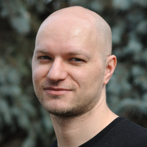

 Currently I'm an assistant professor at the Centre for Theoretical Physics, Polish Academy of Sciences, Warsaw.
I did my PhD at the Department of Mathematics, University of Toronto, my advisor was Bálint Virág. Before, I did my Master degree at the University of Warsaw under Piotr Przytycki.
I also did some data science work as a quant in algorithmic trading.
My mail is marcin.kotowski1@gmail.com. Here is my CV and here is my Linkedin profile.My main research interests are probability and quantum computing (esp. intersection of those two fields). You can find my publications and more about my academic interests on research page.
I used to be active in education of gifted children and organizing various interesting events. More on education & events page.
I'm also interested in many non-academic things, including physical theatre, singing, movement, books, music, etc. Find out more on personal page.
My name is pronounced like this: [ˈmart͡ɕin kɔˈtɔfskʲi]